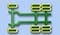
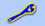
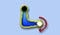

Работа с системой
Работа с системой JOSAM truckaligner 180 / II, вместе с JOSAM Homebase, установленным на ПК, представляет собой измерительное оборудование, предназначенное для выравнивания колес.
JOSAM truckaligner 180 / II состоит из программного обеспечения JOSAM Homebase, двух измерительных головок, четырех весов и другого оборудования, которые используются для сборки системы на транспортном средстве. Измерительные головки питаются от батареи и работают в течение обычного рабочего дня.
JOSAM truckaligner 180 / II использует передовые лазерные технологии и поэтому дает точные и повторяемые измерения.
JOSAM truckaligner 180 / II также использует радиосвязь Bluetooth® между ПК и измерительными головками.
JOSAM truckaligner 180 / II является портативным и может выполнять свои измерения на транспортном средстве автономно. Результаты измерений сохраняются на жестком диске ПК и могут быть распечатаны, когда ПК подключен к принтеру.
Примечание! Для плагинов truckaligner и i-track обязательно отключите варианты энергосбережения, так как он может заблокировать порт USB, используемый для подключения Bluetooth.
Примечание! Убедитесь, что ПК использует правильный модуль Bluetooth и драйверы для обеспечения связи Bluetooth.
Примечание! Убедитесь, что модуль Bluetooth может свободно общаться, не размещайте его внутри шкафа, всегда снаружи.
Подключение / Отключение
Начните с включения двух измерительных головок. Затем установить подключение с измерительными головками в программе JOSAM truckaligner 180/II

Войдите в настройки.

В настройках вы найдете настройки радио (Bluetooth), где вы можете искать, выбирать и подключать измерительные головки. Примечание: иногда вам может понадобиться выполнить поиск более одного раза, чтобы найти измерительные головки.
Короткие шаги для выполнения измерения
- Сначала выполните «Подготовку к измерению», прежде чем продолжить любое измерение.
- Выберите «Быстрый старт» в JOSAM Homebase, чтобы начать измерение без дополнительной информации или создать рабочий заказ в JOSAM Homebase со всеми необходимыми опциями. См. Руководство JOSAM Homebase для получения дополнительной информации.
- Установите все оборудование на автомобиль.
- выполнить калибровку тех колес на той оси, которые вы хотите измерить.
-
Выберите, если вы хотите измерить управляемую
 или неуправляемую ось.
или неуправляемую ось.
- Следуйте инструкциям на экране, чтобы выполнить полное измерение перед настройкой.
- Отрегулируйте выравнивание колес и осей следя за измерениями в программе
- Выполните измерение после регулировки.
Измерительная головка JT611 / JT631 / JT691

- A On / Off
- B Защитная крышка
- C приемник
- D Кнопка измерения
- E Запирающее устройство
- F Стопорный винт
- G Стопорный винт для стабилизатора
- H Вход для зарядки
- I Вход для зарядки(Электронного уровня)

- J Стабилизатор
- К Измерительная кнопка
- L Дисплей
- M BlueTooth
- N Внешний пузырь (только JT611 / JT631)
- O Внутренний пузырь (только JT611 / JT631)
Измерительная головка включается кнопкой ON / OFF A и должна оставаться включенной. Измерительная головка должна быть подключена к зарядному устройству в точке H , когда она не используется.
В нижней части измерительной головки имеется защитная крышка B . Перед выполнением любого измерения необходимо снять крышку. Когда крышка будет снята, лазер достигнет шкал, которые будут отражать лазерный луч на приемники C с обеих сторон измерительной головки.
Если используется электронный уровень JT604 / JT616 , его следует подключить к разъему I в нижней части стабилизатора J , прежде чем проводить измерения. Электронный уровень может быть присоединен к любой из двух используемых измерительных головок.
В верхней части измерительных головок JT611 / JT631 имеется дисплей L, который будет отображать состояние измерения, а также отображать измеренные значения. На всех измерительных головках есть три светодиода, зеленый, желтый, зеленый. Когда измерительная головка включена, все три светодиода загораются, и через некоторое время они выключаются, указывая на то, что измерительная головка готова к подключению. (См. Дальнейшую светодиодную индикацию ниже.)
Стабилизатор J на головке выступает в качестве устройства, чтобы уменьшить колебание , когда колесо поворачивается, и всегда смотрел на колеса оси адаптера с стопорным винтом G .
Кнопка K на стабилизаторе используется для измерения схождения и развала.
На измерительной головке JT611 / JT631 установлены два пузырька, чтобы обеспечить ее горизонтальное положение. Внутренний пузырь O указывает горизонтальное положение самой головки, а внешний пузырь N указывает вертикальное положение. В нижней части головы есть третий пузырь, который используется при калибровке пальца.
Блокирующее устройство E гарантирует , что головка закреплена на вал колеса адаптера , если это необходимо.
LED Дисплей
| Запуск: | все светодиоды включены и выключается через 5-10 секунд. Если желтый светодиод не гаснет через 5-10 секунд, значит, проблема в системе связи. |
Во время измерения схождения:
| Жёлтый светодиод включен | Лазерный двигатель включен и вращается обычно. |
| Мигают оба зеленых светодиода. | Обозначает, что связь установлена с обоих сторон где мигает светодиод. |
| Мигает только один зеленый светодиод. | Связь установлена только на той же стороне где светодиод |
| Зеленый светодиод не включается | Измерительная головка вообще не видит никакой шкалы. Проверьте крышку лазера и высоту весов. |
Во время измерения развала:
| Оба зеленых светодиода загораются | Одновременно когда нет внешнего
электронный уровень подключен. Сначала левый зеленый светодиод, а через мгновение - правый зеленый светодиод, когда подключен внешний электронный уровень. |
Поиск неисправностей
Если есть какие-то проблемы, есть несколько альтернатив, которые можно использовать для диагностики системы в зависимости от типа проблемы.
В меню настройки  вы можете использовать диагностику
вы можете использовать диагностику  , чтобы проверить систему. Для калибровки измерительных головок. перейдите к
, чтобы проверить систему. Для калибровки измерительных головок. перейдите к 
Чистка

Если желтый свет не работает или зеленый свет мигает медленнее чем обычно, то измерительная головка не функционирует, как следует.
Одна из причин этого может быть потому, что зеркало стало грязным и его нужно очистить. Зеркало находится в нижней части измерительной головки, под круглой защитной крышкой.
Снимите защитную крышку (4 винта), а затем очистите защитное стекло перед зеркалом.
Примечание: используйте воду и мыло, а не любой химический чистящий материал. После чистки измерительной головки, нужно проверить и при необходимости откалибровать её.
Технические данные и информация

Каждая измерительная головка помечена серийным номером, годом изготовления и символом СЕ, который подтверждает, что продукт одобренный в соответствии с LVD и EMC директивы, EN50081-2, EN50082-2. Также есть знак, который говорит, что батареи экологически небезопасны.
| Светочувствительность: | 100.000 люкс |
| Лазер: | класс 2 |
| Время работы: | 8 часов |
| Время зарядки: | 7 часов |
| Диапозон Кастера: | +/- 20 градусов |
| Диапазон развала: | от -5 до +10 градусов |
| Максимальный диапазон поворота: | 60 градусов |
| Расстояние до шкалы | 0 - 15 метров |
| Точность схождения: | 0,25 мм / м |
| Точность развала: | +/- 3 мин |
Предварительные проверки измерений
Перед проведением любого измерения убедитесь, что автомобиль не имеет лишнего зазора в сайлентблоках и рулевых тяг, используя оборудование для диагностики люфтов JOSAM AM800 K/AM900 K.
Следующие вещи должны быть проверены перед тем как проводить измерения:
- Давление в шинах. Проверить что бы одинаковые типы шины были установлены на одной оси.
- Люфт в подшипниках: Люфты в шкворнях, рулевом механизме и опоры балансировочных рычагов на опорные мосты автомобилей.
- Крепление осей (люфты в рессорных пальцах)
- Изношенные торсионные втулки
Примечание: если какой-либо из вышеупомянутых пунктов не верен, они должны быть исправлены, прежде чем приступить к измерениям.
Подключение
Установите зажимы, JT636 / JT637, на колесах и измерительные головки на оси.
Экраны и датчики
Соберите самоцентрирующиеся измерительные приборы, JT120, датчик расширения, JT122-123 и экраны JT399-401 / JT614-615 / JT626-627 спереди и сзади транспортного средства.
Если транспортное средство является трейлером или полуприцепом, используйте специальный зажим JT290.
Ветреная среда
Если процедура измерения происходит в ветреную погоду, это может вызвать колебание или вибрацию весов(экранов). Поэтому, чтобы предотвратить это Кронштейн стабилизатора JT119 крепится к вешалкам и крепится к раме шасси.
Регулировка самоцентрирующихся датчиков
Отрегулируйте, с помощью регулировочного устройства на самоцентрирующихся датчиках, JT120. Проверьте уровень.
Регулировка целевых шкал
Установите шкалу и измерительную головку так, чтобы они смотрели друг на друга от центра к центру. На шкалах есть числовая маркировка. Обратите внимание на показания, указанное на внутреннем крае целевой шкалы. Показания должны быть одинаковыми для всех шкал при установке.
Отрегулируйте высоту целевой шкалы так что бы его центр находился на том же уровне, что и нижний край измерительной головки.
Расположите другие целевые шкалы на такой же высоте и с такими же показателями, как и у первой установленной шкалы.
Новая ось
Чтобы начать измерение новой оси, которая не была измерена ранее, нажмите для управляемого моста или для неуправляемого моста.
[Только на truckaligner II] Перед началом любого нового измерения вы должны выполнить биение для калибровки колесных адаптеров. Раздел Биение может быть
доступна из всех меню, где её необходимо выполнить.
для калибровки колесных адаптеров. Раздел Биение может быть
доступна из всех меню, где её необходимо выполнить.
Программа автоматически определяет, когда измерительные головки перемещаются и затем сохраняет результат отдельно для каждой оси по очереди начиная от передних весов. В случае измерения нескольких неуправляемых осей, также параллельность показана в верхнем правом углу, как разница между самым высоким и самым низким из квадратов. Значения в скобках указывают измеренные значения до регулировки.
При измерении новой оси значения сохраняются как значения «До регулировки»
, эти значения указаны в скобках.
Чтобы настроить или выполнить
измерения «После регулировки» на оси, которая была измерена, выберите с помощью значков меню или
(или выберите ось в меню слева)
и нажмите . Текущий номер оси отображается в нижней части
экран.
Режим настройки также можно открыть, нажав 
Меню иконок
Значок меню настроек.
Значок меню переключения в режим «После регулировки» .
Значок меню переключения в режим «До регулировки» .
Меню регулировки оси. Этот значок отображается только тогда, когда ось измеряется «До регулировки»
Значок меню Runout(биение)
Значок Меню выравнивания транспортного средства используется для выравнивания сочлененных транспортных средств, необходимые для получения правильного результата измерения для задней оси.
Регулировка шкал. Параллельная регулировка весов к центральной линии транспортного средства (прицеп и полуприцеп) до начала измерений. Доступно только при выборе в настройках прицепа или полуприцепа.
Меню для ТС с двумя управляемыми осями. Измеряет параллельность двух рулевых осей. Углы измеряются с помощью значений Схождения. Этот значок отображается только при наличии двух управляемых осей.
Управляемая ось. Начните измерять новую управляемую ось.
Неуправляемая ось. Начните измерять новую неуправляемую ось.
Кнопки вверх и вниз используются для просмотра измеренных осей, которые отображаются в окне. Эти значки видны только тогда, когда уже более одной оси измерено.
Меню для ТС с двумя управляемыми осями. Измеряет параллельность двух рулевых осей. Углы измеряются с помощью значений Схождения. Этот значок отображается только при наличии двух управляемых осей.
ОК Вход в режим измерения для отображаемой оси. Значок ОК виден только после измерения оси.
Runout(биение)
Выполните биение для калибровки колесных адаптеров. Вы можете выполнить биение двумя способами.
1. Позвольте Truckaligner провести вас через процедуру с помощью блока управления.
Truckaligner II позволяет выполнять биение на всех колесах на
ТС.
2. Сделайте самостоятельно с измерительной головкой.
Выполните полную последовательность с одной измерительной головкой. Это полезно когда более чем один оператор одновременно выполняет биение.
Выберите один из методов в настройкеах или в настройке Homebase.
Условия
Ось поднята на домкрате. Установите измерительные головки на колесные адаптеры.
Шаг 1
Поверните колесо так, чтобы белая ручка на зажиме колеса смотрела вперёд. Нажмите кнопку измерения на измерительной головке.
Шаг 2
Поверните колесо на 180 градусов, чтобы белая ручка на зажиме колеса смотрела прямо в противоположном направлении. Нажмите кнопку измерения на измерительной головке. Отрегулируйте горизонтальный зажим с белой ручкой , пока показание не будет в пределах 0,2 мм / м. Нажмите кнопку еще раз.
Шаг 3
Поверните колесо на 90 градусов, чтобы чёрная ручка на зажиме колеса смотрела прямо. Нажмите кнопку измерения на измерительной головке.
Шаг 4
Поверните колесо на 180 градусов, чтобы чёрная ручка на зажиме колеса смотрела прямо в противоположном направлении. Нажмите кнопку измерения на измерительной головке. Отрегулируйте горизонтальный зажим с чёрной ручкой , пока показание не будет в пределах 0,2 мм / м.
Шаг 5
Чтобы проверить компенсацию биения наконец, поверните колесо на 90 градусов, так что противоположный рычаг зажима колеса белого цвета указывает прямо назад. Нажмите кнопку измерения на измерительной головке. Если значение превышает 0,02, повторите Процедуру калибровки биения. В противном случае процедура калибровки биения завершена.
Нажмите или если готово.
Меню иконок
Значок Главного меню настроек.
Кнопка Стоп прерывает процедуру и возвращает вас обратно к началу процедуры калибровки биения.
Кнопка OK возвращает вас в предыдущее меню, когда Вы выполнили процедуру калибровки биения.
Неуправляемая ось
Меню неуправляемых осей используется для измерения углов поворота колес и схождения неуправляемых осей. Чтобы измерить все оси на транспортном средстве, вам просто нужно переместить измерительные головки и измерьте одну ось за другой в порядке, который вы предпочитаете. Программа автоматически определит, когда измерительные головки перемещаются, а затем сохранит результат отдельно для каждой оси по очереди начиная от передних весов. Внизу прямо на экране вы можете увидеть полосу миниатюр, которая показывает вам предыдущий, текущий и следующий шаг в процедуре.
Условия
A. Выполните процедуру биения.
B. Неуправляемая ось стоит на
полу НЕ ПОДНЯТА.
C. Горизонтальное положение или
электронный уровень установлен.
D. Установите измерительные головки на
колесные адаптеры.
Когда будет готово нажмите ОК
Выполняется измерение. Программа продолжится автоматически после выполнения измерение.
Меню иконок
Влево и Вправо Левая и правая кнопки используются для прокрутки по разным шагам.
Регулировка развала и схождения
В этом режиме вы можете увидеть результаты при регулировке развала и / схождения сразу на экране. Сначала проверьте, выполнены ли все условия, затем продолжите измерения. Если вы хотите, вы можете пропустить первый шаг (измерение развала) нажав кнопку со стрелкой вправо, а затем нажмите кнопку ОК. Когда вы закончите настройку, Truckaligner автоматически продолжит измерение после регулировки. Затяните все винты / гайки и нажмите ОК, чтобы выполнить это измерение. Результат будет показан на экране.
Условия
А. Процедура биения
выполнена.
B. Управляемая ось на специальных подкладках.
C. Горизонтальное положение, уровень
установлен.
D. Измерительные головки установлены на
колесные адаптеры.
Когда будете готовы, нажмите ОК для продолжения.
Регулировка Развала
При регулировке будут постоянно показываться углы развала результаты для левой и правой стороны.
Когда будет готово нажмите ОК для продолжения
Регулировка Схождения
Значения схождения для левого и правого колеса показываются постоянно при регулировке. В то же время вы также получите общее значение схождения.
Когда будет готово нажмите ОК для продолжения
Измерения
Отрегулируйте рулевое колесо прямо ± 2 мм / м.
Дождитесь продолжения программы или нажмите ОК, если будете готовы.
Окно результата
Когда появится окно результатов, результаты будут сохранены.
A. Схождение (Общее значение)
B. Схождение
C. Развал
D. отрицательное схождение(расхождение) (TOOT)